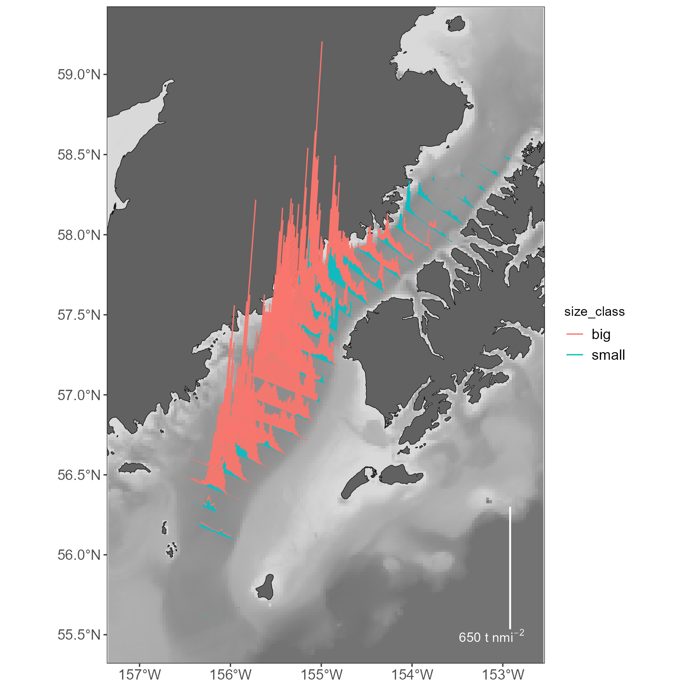
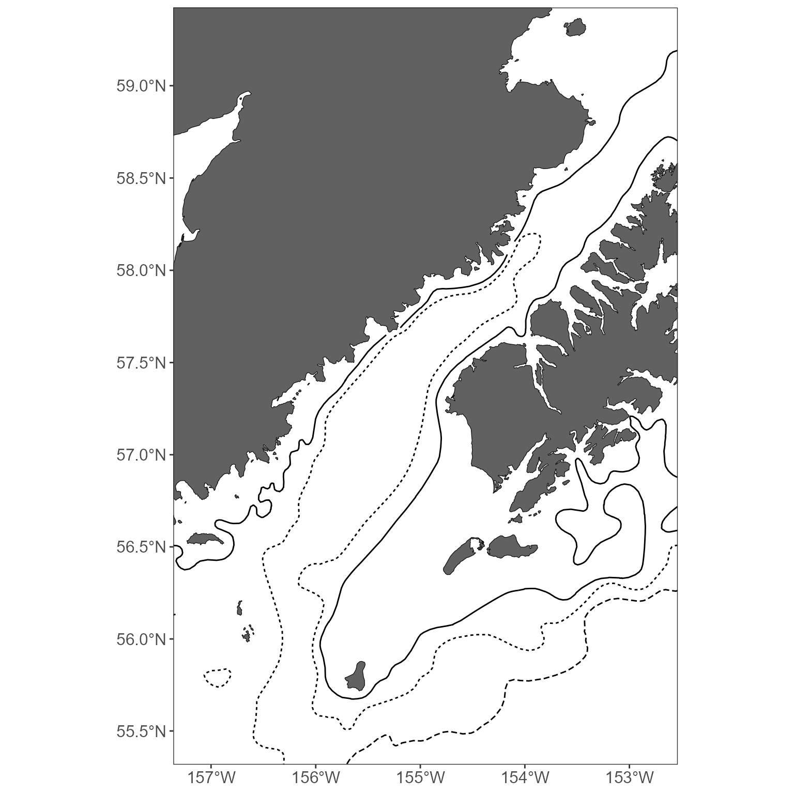
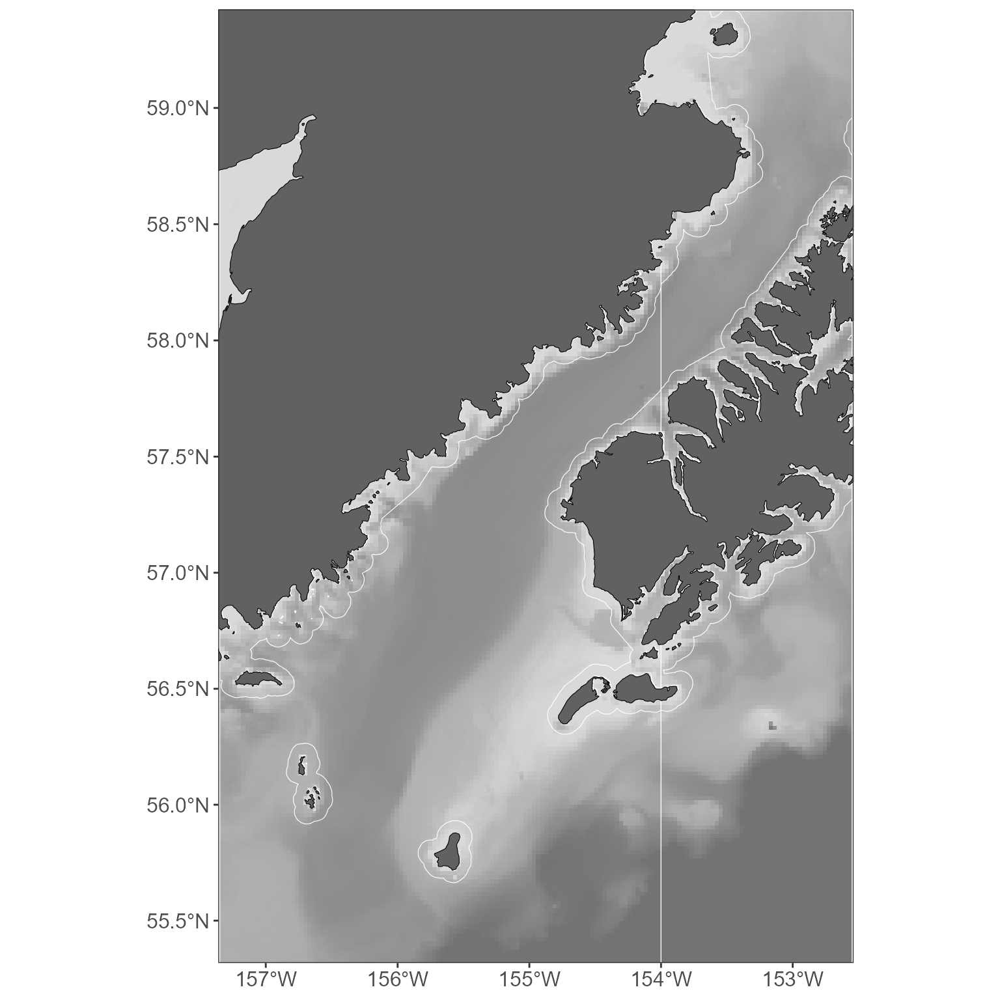
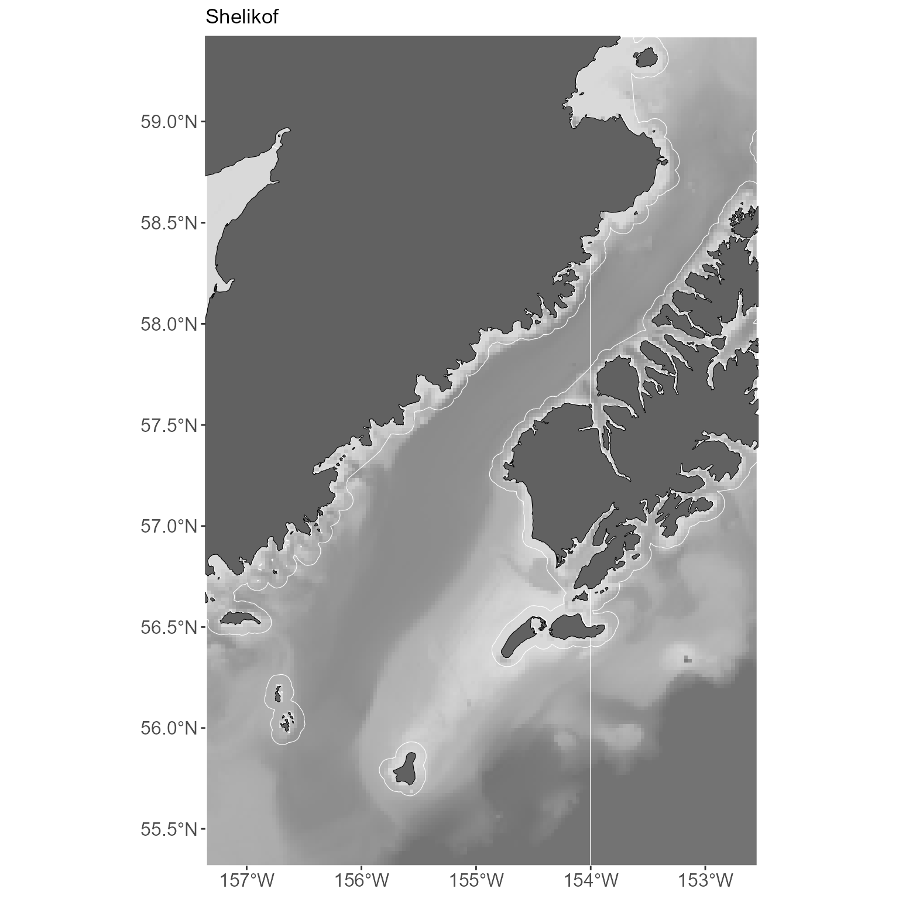
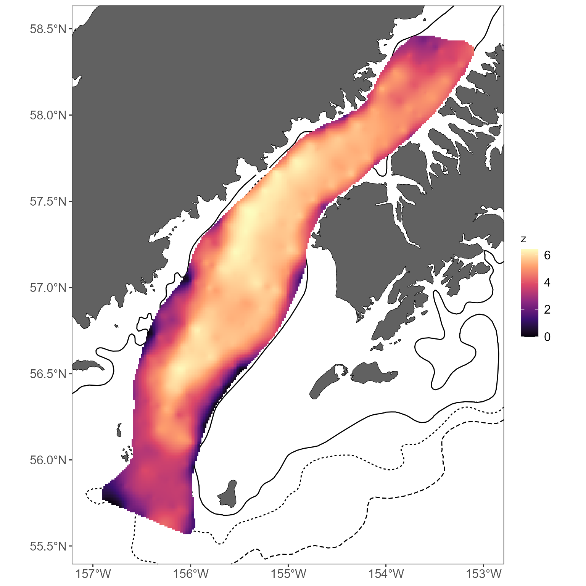
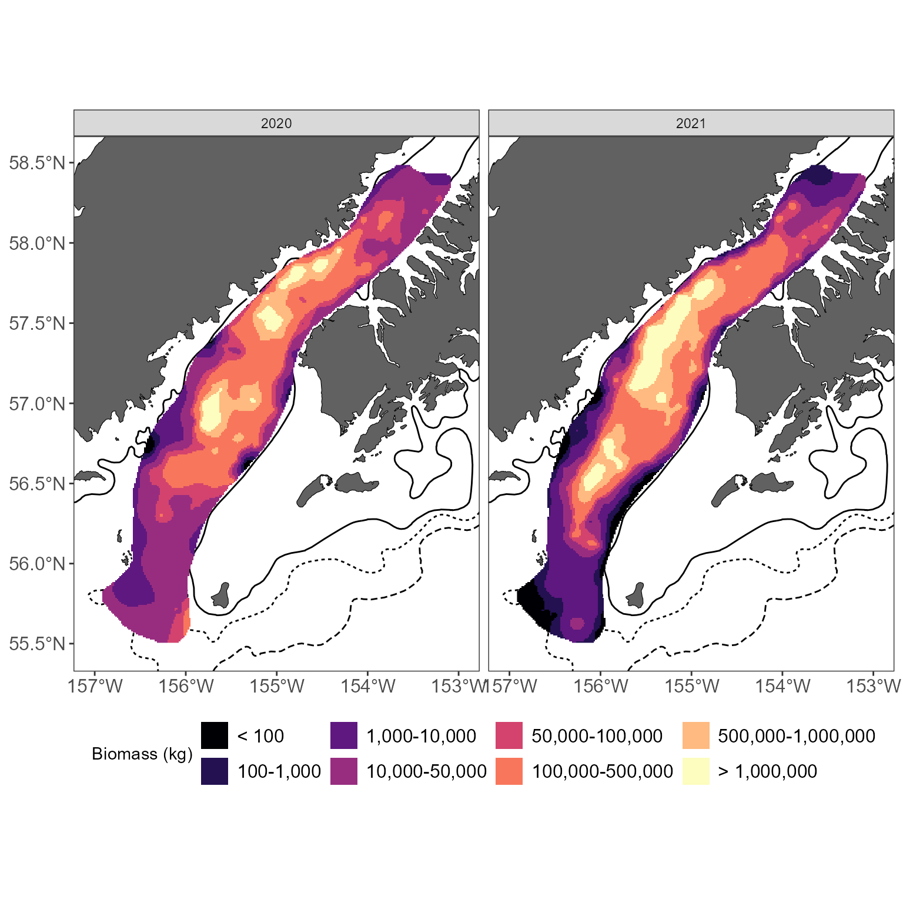

Mapping with MACEReports
MACEReports-mapping.RmdMACEReports provides a bunch of functions intended to handle mapping for cruise reports and presentations. These include:
- Creating stickplots
- Creating interpolated maps
- Creating basemaps that use high-resolution bathymetry or simple contour lines
In general, each function is intended to use data that we can readily query out of the database, and not require a ton of work to prepare and map it. You should only need to gather Latitude/Longitude (decimal degrees) and an abundance value (biomass, numbers, etc) in most cases. A dataframe like that provided here as an example:
#get a simple dataset to work from: biomass_nmi2 from a single survey
shelikof_xyz = shelikof_biomass%>%
filter(year == 2021)%>%
group_by(INTERVAL, START_LATITUDE, START_LONGITUDE)%>%
summarize(BIOMASS = sum(BIOMASS),
BIOMASS_NM2 = sum(BIOMASS_NM2))
knitr::kable(head(shelikof_xyz))| INTERVAL | START_LATITUDE | START_LONGITUDE | BIOMASS | BIOMASS_NM2 |
|---|---|---|---|---|
| 2.02103e+13 | 58.50359 | -152.8091 | 0.000 | 0.000 |
| 2.02103e+13 | 58.50873 | -152.8212 | 5896.876 | 1572.500 |
| 2.02103e+13 | 58.51346 | -152.8341 | 56207.647 | 14988.706 |
| 2.02103e+13 | 58.51815 | -152.8472 | 36888.068 | 9836.818 |
| 2.02103e+13 | 58.52297 | -152.8603 | 22650.779 | 6040.208 |
| 2.02103e+13 | 58.52777 | -152.8733 | 23925.853 | 6380.227 |
provides all the values you’ll need for most functions (well, technically, more: you don’t need the INTERVAL index). Note that this dataframe has all intervals in the Shelkof present, including those that have no pollock (i.e. BIOMASS = 0). This is intentional- you’ll want these if you interpolate values later.
A note about projections
Although these functions generally require Longitude/Latitude (decimal degrees; henceforth referred to as x,y) as arguments, they will re-project points into a nicer projection for producing maps. By default, this is Albers Equal Area Alaska (EPSG:3338). If you’d prefer something else, this is possible (see the help for a given function).
How do I plot these things?
The functions that create sticks and interpolated plots return data in forms that can be plotted however you’d like (base R plotting, ggplot, etc). The Basemaps, however, are ggplot-specific. Examples in this vignette use ggplot for plotting.
Creating sticks
To make a stickplot, you’ll need: x,y, and an abundance value (z).
The function build_sf_sticks will return your sticks as a
sf (simple features) dataframe. sf dataframes
can be plotted easily using ggplot2, or base r
plot.
sticks = build_sf_sticks(x = shelikof_xyz$START_LONGITUDE, y = shelikof_xyz$START_LATITUDE, z = shelikof_xyz$BIOMASS_NM2)By default, you’ll get a bar that is rotated at 5 degrees from
vertical, and is scaled to work in most plots. These can be specified
differently using the arguments rotation and
bar_scale (see ?build_sf_sticks for details)
Plotting your sticks is easy with ggplot2::geom_sf():
There is a related function to produce a legend to go with your
sticks, build_stick_legend:
stick_legend = build_stick_legend(stick_data = sticks)By default, it produces a white legend to be placed in the bottom
right corner of the plot, with the proper units for our standard plots
of biomss/nmi-2; all of these defaults can be modified as needed (see
?build_stick_legend). This legend can then be added to you
plot (see below).
Creating a basemap
Of course, what we have so far isn’t a great way to look at your
data! We need a basemap. The function get_basemap_layers
returns a background map that uses either a high-resolution bathymetric
layer that’s appropriate for our surveys, or simple contours at
user-specifed depths (i.e. 100 m, 200 m). It can also return a variety
of commonly used layers including the NMFS management areas, 3 NMI
buffer regions,and Steller Sea Lion exclusions. These basemaps are
intended for the Bering Sea and Gulf of Alaska.
If you just want a basic map, you can simply feed the sticks
dataframe you just created to the function
get_basemap_layers.
basemap = MACEReports::get_basemap_layers(plot_limits_data = sticks)This will produce land and bathymetric layers that encompass your
data. It returns a ggplot object. If you find yourself
wanting to access these layers without using ggplot
plotting- complain, and we’ll add this functionality.
#plot it all: the basemap, the sticks, and the legend:
basemap+
geom_sf(data = sticks, color = 'red')+
stick_legendMore stickplot options
We often present stickplots with multiple groups (say, small fish and big fish) as separate sticks. This can be done with `build_sf_sticks’:
#summarize the data by fish >=30 cm, <30 cm
shelikof_by_size = shelikof_biomass%>%
filter(year == 2021)%>%
mutate(size_class = ifelse (LENGTH >= 30, 'big', 'small'))%>%
group_by(INTERVAL, size_class, START_LATITUDE, START_LONGITUDE)%>%
summarize(BIOMASS = sum(BIOMASS),
BIOMASS_NM2 = sum(BIOMASS_NM2))%>%
#cleanup: because we included intervals with zero pollock, the size class will be NA in those cases.
#remove those from this plot!
filter(!is.na(size_class))
#use the 'group_variable' argument in build_sf_sticks to build sticks for each group:
sticks_by_size = build_sf_sticks(x = shelikof_by_size$START_LONGITUDE, y = shelikof_by_size$START_LATITUDE, z = shelikof_by_size$BIOMASS_NM2, group_variable = shelikof_by_size$size_class)
#plot everything again:
basemap = MACEReports::get_basemap_layers(plot_limits_data = sticks_by_size)
stick_legend = build_stick_legend(stick_data = sticks_by_size)
basemap+
geom_sf(data = sticks_by_size, aes(color = size_class))+
stick_legend
More basemap options
The bathymetry layer is nice for some plots, but inappropriate in others. Want to keep it simple? Specify what contours you’d like to draw. Your options are: 50, 100, 200, 300, 500, 700, 1000 (values are in M).
basemap = MACEReports::get_basemap_layers(plot_limits_data = sticks_by_size, bathy = FALSE, contours = c(100,200, 1000))
#view the plot
basemap
You might also want to include a commonly used layer, such as the
NMFS management area or the 3nmi buffer around land areas. Great. See
?get_basemap_layers for all the current options, but here’s
how you’d add those ones:
basemap = MACEReports::get_basemap_layers(plot_limits_data = sticks_by_size, management_regions = TRUE, alaska_3nmi_buffer = TRUE)
#view the plot
basemap
Since the basemap is just a ggplot object, you can add
anything you might want to it, change the themes, etc.
basemap+
labs(title = 'Shelikof')+
theme(panel.border = element_blank())
Interpolations
While the sticks are a MACE favorite, it is often nice to present an interpolated map as well. Why might you want to do that?
- Some people think that pseudo 3-d plots like the stickplots are bad (the argument seems to be that they distort the data and are therefore hard to interpret). I don’t totally agree with them, but if you agree, interpolated plots are another option to display distribution and abundance.
- Interpolated plots are a nice way to compare distribution and abundance over time (lots of information in a small panel).
Creating interpolations requires you to make a few more choices as compared to creating stickplots.
There are limitations on where these plots can be made. Right now, you can only make maps in the following regions: ‘shelikof’, ‘summer_goa’, ‘core_ebs’, and ‘sca’ (i.e. Shelikof Strait winter survey, Summer GOA survey, Summer EBS survey, summer EBS survey within the sea lion conservation area). This is because you must define the domain for your interpolation. In practical terms, that means someone needs to build a polygon that defines the domain. If you want to create interpolations elsewhere, we can work to add that polygon here.
You have to define the resolution over which you want to interpolate. Smaller numbers = finer resolution (and slower run times). This value can be thought of as the distance in meters between the interpolation points. 1000 seems to work well in the Shelikof, 2500 seems to be fine in the larger regions.
You have to consider how long you want to wait for an interpolation. We’ve generally been using universal kriging with latitude + longitude as predictor variables, i.e. a formula like
log10(abundance) ~ Lat + Long. This works well but can be very slow! Each estimated point is a function of every observed point- in a case like the EBS, this can be ~60,000 estimated points, each of which is estimated on the basis of ~10,000 observations. So it can be very slow! Therefore, this function includes options that can produce a similar output that captures the abundance and distribution, but in less time. We’ve got options for:Inverse Distance Weighting
Ordinary Kriging (with or without a local neighborhood for estimation, see below)
Universal kriging (with or without a local neighborhood)
Using a local neighborhood (i.e. the number of nearest observations to use in estimation) speeds things up GREATLY and seems to capture the same trends as estimating without this limitation. Testing suggests that the best compromise between speed and a helpful presentation of abundance and distribution is to use universal kriging with a local neighborhood of 200 observations:
interp_vals_2021 = get_interpolated_plot_vals(x = shelikof_xyz$START_LONGITUDE, y = shelikof_xyz$START_LATITUDE, z = shelikof_xyz$BIOMASS, resolution = 1000, region = 'shelikof', interp_type = 'universal', neighborhood = 200)
#> [1] "Interpolating using universal kridging; this can be very slow! Consider a higher resolution value if this is taking forever (recommended resolution for summer surveys >= 2500; for winter >= 1000"
#return a small table
knitr::kable(head(interp_vals_2021), row.names = FALSE)| x | y | z |
|---|---|---|
| 18516.69 | 945095.5 | 2.674241 |
| 19526.69 | 945095.5 | 2.588031 |
| 20536.69 | 945095.5 | 2.435781 |
| 21546.69 | 945095.5 | 2.357102 |
| 22556.69 | 945095.5 | 2.310085 |
| 23566.69 | 945095.5 | 2.285697 |
Note that this function simply returns a dataframe with the columns
‘x’, ‘y’, and ‘z’. x and y correspond to the positions of your
interpolated values; z corresponds to the estimated value. By default, x
and y are coordinates in Albers Equal Area projection (but this can be
changed with the out_crs argument to
get_interpolated_plot_vals), while z is the
log10-transformed abundance value (right now, this can’t be changed as
log10-transformed values seem to highlight abundance and distribution
well in our data; this could change in future versions if folks dislike
the chosen transformation).
The x and y points form a grid; therefore, each represents a box of equal size and should be plotted as a raster.
ggplot()+
geom_raster(data = interp_vals_2021, aes(x = x, y = y, fill = z))Of course, a basemap and a useful color scheme would really help
here. Making a basemap requires one additional step, in comparison to
the above examples with stickplots: because of current limitations in
how some of these functions are written, you must provide an
sf object to the get_basemap_layers
function:
#create an sf object we can use to define the basemap extent
extent = st_as_sf(interp_vals_2021, coords = c('x', 'y'), crs = 'EPSG:3338')
#use this to return the basemap; return a simple basemap with contours as the bathymetery seems too busy with interpolated maps
basemap = get_basemap_layers(plot_limits_data = extent, bathy = FALSE, contours = c(100,200,1000))Once you’ve got a basemap, you can add your raster (here, with a slightly upgraded color scheme):
basemap+
geom_raster(data = interp_vals_2021, aes(x = x, y = y, fill = z))+
scale_fill_viridis_c(option = 'magma')
There is an additional function
get_interpolated_color_bins to bin colors and make trends
easier to see. At a minimum, you have to specify the z value:
interp_vals_2021$plot_col = get_interpolated_color_bins(z = interp_vals_2021$z)
basemap+
geom_raster(data = interp_vals_2021, aes(x = x, y = y, fill = plot_col))+
scale_fill_viridis_d(option = 'magma')By default, this returns log10-sized bins; this can be modified using
the style argument to
get_interpolated_color_bins. See
?get_interpolated_color_bins for options, but
kmeans tends to work well.
If you want to interpolate and compare over multiple years, here’s one approach:
#summarize example data: biomass per interval, per year
shelikof_by_year = shelikof_biomass%>%
group_by(year, INTERVAL, START_LATITUDE, START_LONGITUDE)%>%
summarize(BIOMASS = sum(BIOMASS))
#loop through each year to return each year's values:
interp_by_year =c()
for (i in unique(shelikof_by_year$year)){
#limit your dataset to one year
tmp_data = shelikof_by_year[shelikof_by_year$year == i,]
#get the interpolations for this year
interp_vals = get_interpolated_plot_vals(x = tmp_data$START_LONGITUDE, y = tmp_data$START_LATITUDE, z = tmp_data$BIOMASS, resolution = 1000, region = 'shelikof', interp_type = 'universal', neighborhood = 200)
#add a year index
interp_vals$year = i
#and compile
interp_by_year = rbind(interp_by_year, interp_vals)
}
#> [1] "Interpolating using universal kridging; this can be very slow! Consider a higher resolution value if this is taking forever (recommended resolution for summer surveys >= 2500; for winter >= 1000"
#> [1] "Interpolating using universal kridging; this can be very slow! Consider a higher resolution value if this is taking forever (recommended resolution for summer surveys >= 2500; for winter >= 1000"
#create an sf object we can use to define the basemap extent
extent = st_as_sf(interp_by_year, coords = c('x', 'y'), crs = 'EPSG:3338')
#use this to return the basemap; return a simple basemap with contours as the bathymetery seems too busy with interpolated maps
basemap = get_basemap_layers(plot_limits_data = extent, bathy = FALSE, contours = c(100,200,1000))
#bin colors to highlight patterns
interp_by_year$plot_col = get_interpolated_color_bins(z = interp_by_year$z)
#use ggplot to plot, facet plots by year
basemap+
geom_raster(data = interp_by_year, aes(x = x, y = y, fill = plot_col))+
scale_fill_viridis_d(option = 'magma')+
facet_wrap(~year, ncol = 2)+
labs(fill = 'Biomass (kg)')+
theme(legend.position = 'bottom')